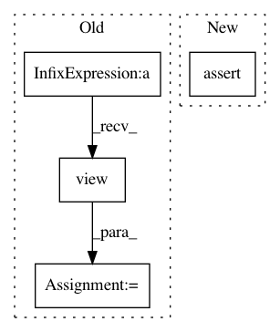

6c06a88957549b1405f43361e4aa911abc56ef66,se3cnn/kernel.py,SE3Kernel,combination,#SE3Kernel#Any#,296
Before Change
b_el = kij.size(0)
b_size = kij.size()[1:]
w = weight[weight_index: weight_index + mi * mj * b_el].view(mi * mj, b_el) // [I*J, beta]
weight_index += mi * mj * b_el
basis_kernels_ij = kij.contiguous().view(b_el, -1) // [beta, i*j*x*y*z]
ker = torch.mm(w, basis_kernels_ij) // [I*J, i*j*x*y*z]
ker = ker.view(mi, mj, *b_size) // [I, J, i, j, x, y, z]
ker = ker.transpose(1, 2).contiguous() // [I, i, J, j, x, y, z]
ker = ker.view(mi * self.dims_out[i], mj * self.dims_in[j], *b_size[2:]) // [I*i, J*j, x, y, z]
kernel[si, sj] = ker
else:
kernel[si, sj] = 0
After Change
begin_j += mj * self.dims_in[j]
begin_i += mi * self.dims_out[i]
assert weight_index == self.nweights
return kernel
def forward(self): // pylint: disable=W
return self.combination(self.weight)
In pattern: SUPERPATTERN
Frequency: 3
Non-data size: 4
Instances
Project Name: mariogeiger/se3cnn
Commit Name: 6c06a88957549b1405f43361e4aa911abc56ef66
Time: 2018-10-04
Author: geiger.mario@gmail.com
File Name: se3cnn/kernel.py
Class Name: SE3Kernel
Method Name: combination
Project Name: rusty1s/pytorch_geometric
Commit Name: 455a0dc9a98212089a7201a025670c33a1770f67
Time: 2017-10-23
Author: matthias.fey@tu-dortmund.de
File Name: torch_geometric/nn/functional/spline_gcn_test.py
Class Name: SplineGcnTest
Method Name: test_backward
Project Name: nilearn/nilearn
Commit Name: e3d577b5595af3e1c9a05d3be84dbdf1a7c4aa20
Time: 2020-07-29
Author: jerome@dockes.org
File Name: nilearn/datasets/tests/test_struct.py
Class Name:
Method Name: test_fetch_oasis_vbm